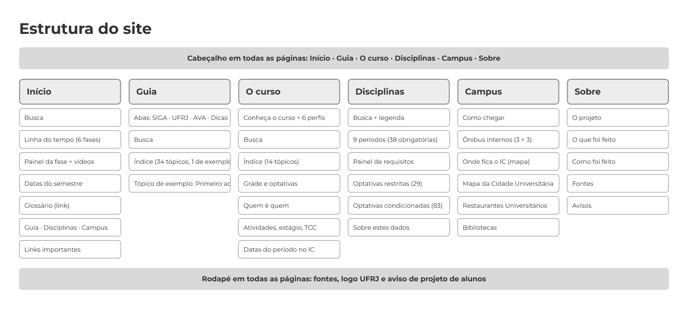

O projeto
Trabalho da disciplina Habilidades Sociais para o Trabalho (ICP145), do BCC/UFRJ: prototipar um recurso para ajudar os calouros do curso. O grupo fez este site, que reúne o que o calouro precisa saber em cada fase do semestre. Não é um site oficial da UFRJ nem do Instituto de Computação.
Por que fizemos este site
A UFRJ já publica muito conteúdo para quem está entrando: manuais, vídeos, páginas dos institutos, calendário, mapas e avisos. O mesmo material ajuda quem já estuda aqui há mais tempo. O problema é que ele está espalhado. Para saber como pedir disciplinas, quando trancar, onde almoçar e qual ônibus pegar, a pessoa passa por vários sites, PDFs e canais de vídeo, cada um organizado de um jeito.
Não faltava informação. Faltava um lugar que juntasse e colocasse em ordem o que já existe. Foi esse o problema que escolhemos resolver.
Como resolvemos
- Por momento do semestre. O Início divide tudo em 6 fases e mostra o que fazer em cada uma, em vez de obrigar a pessoa a saber o que procurar.
- Uma busca só. Ela encontra tópicos de várias páginas do site, sem precisar saber em qual site da UFRJ está a resposta.
- Cada assunto num lugar só. O Guia reúne SIGA, AVA, documentos e bolsas. Disciplinas mostra o que cada matéria exige e o que libera. Campus junta ônibus, mapas, RUs e bibliotecas.
- Fonte oficial sempre à mão. Não criamos regras novas: o site resume e aponta para o material da UFRJ, e a seção Fontes mostra de onde veio cada coisa.
- Vídeos dentro do assunto. Os 9 vídeos oficiais aparecem no tópico a que pertencem, em vez de ficarem perdidos nos canais.
- Texto direto e feito para o celular. Linguagem simples, e as tabelas viram cartões na tela pequena.
O site não substitui as páginas da UFRJ e não é oficial: é um caminho para chegar nelas mais rápido. As informações mudam, por isso cada assunto aponta para a fonte.
O site em números
- 6 páginas
- 48 tópicos (34 no Guia e 14 em O curso)
- 150 disciplinas do BCC
- 9 vídeos da UFRJ
- 66 links para fontes
- 16 testes automáticos
Estrutura do site
O menu e o rodapé aparecem em todas as páginas. Abaixo, o que cada página tem.

O que foi feito
Seis páginas, cada uma com um papel:
- Início: linha do tempo com as 6 fases do semestre, datas, busca e links importantes, como os e-mails da secretaria com botão para copiar.
- Guia: 34 tópicos com busca, em quatro abas (SIGA, UFRJ, AVA e Dicas dos veteranos), com os vídeos oficiais dentro de cada assunto.
- O curso: como o BCC se organiza, os seis perfis, optativas, quem é quem, atividades complementares, estágio, TCC, CAInfo e e-mail do IC.
- Disciplinas: as 150 matérias do BCC (38 obrigatórias e 112 optativas). Ao clicar numa, mostra o que ela exige e o que libera.
- Campus: ônibus internos, mapa clicável, RUs com horários e bibliotecas.
- Sobre: o porquê do projeto, a estrutura, as tecnologias e as fontes.
Como foi feito
- Das ideias levantadas (wiki, mapa de disciplinas, mapa do campus, linha do tempo e vídeos), o grupo juntou quatro em um só site.
- Listamos o conteúdo necessário de cada aba e pesquisamos em fontes oficiais da UFRJ.
- Construímos o site por partes, revendo cada tela, com as cores e a fonte do guia de identidade visual da UFRJ.
- Testamos os links e o uso no computador e no celular, e publicamos no Vercel.
O site é feito em HTML, CSS e JavaScript simples, sem biblioteca de interface.
O que foi usado e onde
| Tecnologia | Onde | Para quê |
|---|---|---|
| HTML | As 6 páginas. | Texto, tabelas, links e a estrutura de cada tela. |
| CSS | Todas as páginas, no arquivo style.css. |
Cores e fonte Montserrat da UFRJ, layout para computador e celular. |
| JavaScript: busca | Início, Guia, O curso e Disciplinas (busca.js). |
Busca nos tópicos, sem acento e sem diferenciar maiúscula. |
| JavaScript: fases | Início (fases.js). |
Datas de cada uma das 6 fases do semestre 2026.2. |
| JavaScript: tabelas | Guia, O curso e Campus (tabelas.js). |
No celular, cada linha da tabela vira um cartão. |
| JavaScript dentro das páginas | Guia, Disciplinas, Campus e Início. | Abas do Guia, lista de disciplinas com pré-requisitos, player de vídeo e botão Copiar. |
| Leaflet e OpenStreetMap | Campus. | Mapa clicável com RUs, bibliotecas e pontos de ônibus. |
| Node.js | Arquivos *.test.js. |
16 testes automáticos da busca, das fases e das tabelas. |
| Figma | Antes de programar, wireframe do site. | Desenho da estrutura das 6 páginas. |
| Git e GitHub | Repositório do código. | Histórico de mudanças do código. |
| Vercel | Site no ar. | Publicação do site em calouro-bcc-ufrj.vercel.app. |
Documentos e código
Dois documentos em PDF mostram o conteúdo do site e como as informações foram levantadas. O código está aberto no GitHub.
- Conteúdo do site (PDF): todos os textos do site, página por página.
- Como levantamos as informações (PDF): cada item do site, de onde veio a informação e onde ele aparece.
- Código do site no GitHub: todos os arquivos do site.
Fontes
| Material | Onde aparece | O que forneceu |
|---|---|---|
| Manual do Aluno "Conhecendo o SIGA" (Equipe SIGA UFRJ) | Guia (aba SIGA) | Fases, inscrição, CRID e documentos. |
| Manual do Calouro UFRJ (Conexão UFRJ) e Guia da PR7 para calouros | Guia | Bolsas, residência, RU e segurança. |
| Grade curricular do BCC (Instituto de Computação) | Disciplinas e O curso | Disciplinas, créditos e requisitos. |
| Linhas internas e mapas da Prefeitura Universitária | Campus | Ônibus internos e mapas. |
| Página dos RUs e BandejApp | Campus | Endereços, preços e horários dos RUs. |
| SiBI | Campus | Bibliotecas. |
| OpenStreetMap | Campus (mapa clicável) | Coordenadas dos pontos do mapa. |
| Calendário Acadêmico 2026 (Conselho Universitário) | Início e O curso | Datas das fases do semestre. |
| Vídeos dos canais Siga UFRJ, Coord. Grad. ESS (UFRJ) e Biblioteca do NCE, no YouTube | Guia, Campus e Início | 9 vídeos dentro dos assuntos. |
| Identidade visual da UFRJ | Todas as páginas | Logo, cor e fonte. |
Fontes por aba
A tabela acima traz as fontes principais. Aqui estão as fontes de cada aba, com os endereços.
Início
- "Conhecendo o SIGA: Manual do Aluno" (Equipe SIGA UFRJ; cópia em arquivos/manual-siga-ufrj.pdf): fases, o que fazer em cada uma, regra de que no 1º período a inscrição é feita pela coordenação.
- Portal do Aluno: portal.ufrj.br
- Intranet (primeiro acesso): intranet.ufrj.br
- Calendário acadêmico da graduação 2026 (Conselho Universitário): consuni.ufrj.br/images/Resolucoes/Calendario_academico_2026.pdf
- Manual do Calouro UFRJ (Conexão UFRJ, 2025): conexao.ufrj.br/2025/03/manual-do-calouro-ufrj-os-primeiros-passos-para-quem-acabou-de-entrar-na-universidade
- BandejApp (cardápio e horários dos RUs): devmobufrj.github.io/BandejApp
- Instagram da Equipe SIGA: instagram.com/equipesiga_ufrj
- Extensão (UFRJ): ufrj.br/extensao-e-sociedade/extensao
- Bolsas e auxílios (assistência estudantil): ufrj.br/ensino-e-pesquisa/assistencia-estudantil
- Contatos do Portal, da DRE e de diplomas: e-mails do manual do SIGA (portalaluno@dre.ufrj.br, direcao@dre.ufrj.br, diplomas@pr1.ufrj.br)
Guia
- Manual do Aluno do SIGA: primeiro acesso, fases, como pedir disciplinas, trocar de turma, trancar, as 16 situações de inscrição, CRPID, CRID, requerimentos, extensão, glossário, documentos.
- Menu "Documentos" do Portal do Aluno e descrição do vídeo "Declarações disponíveis no SIGA UFRJ".
- Bolsas e benefícios: ufrj.br/ensino-e-pesquisa/assistencia-estudantil/beneficios-atuais
- Guia da PR7 para calouros (PDF, 2022): ufrj.br/wp-content/uploads/2022/04/GuiaPR7calouros.pdf (cópia em arquivos/guia-pr7-calouros.pdf)
- Restaurantes Universitários: ufrj.br/ensino-e-pesquisa/assistencia-estudantil/restaurantes-universitarios
- Segurança (Diseg) e Ouvidoria, aplicativo do Portal: Manual do Calouro UFRJ (Conexão, 2025), link acima.
- Contatos do Instituto de Computação: ic.ufrj.br/info/contato e ic.ufrj.br/info/sobre-o-bcc
- Telegram da coordenação do BCC (citado na página do IC): bit.ly/telegram_coord_icufrj
- Aplicativo Portal Aluno UFRJ (Android): play.google.com/store/apps/details?id=br.ufrj.gnosys.mobile&hl=pt_BR
- Guia de serviços de saúde mental (Conexão UFRJ): conexao.ufrj.br/2025/01/janeiro-branco-guia-de-servicos-de-saude-mental-na-ufrj-para-estudantes-e-servidores
- Seções "O curso de BCC", "Quem é quem", "Atividades complementares", "Estágio, monitoria, TCC e intercâmbio", "Centro Acadêmico" e "Datas do período no IC":
- Sobre o BCC: ic.ufrj.br/info/sobre-o-bcc
- Estrutura administrativa e e-mails: ic.ufrj.br/info/estrutura-administrativa
- Atividades complementares: ic.ufrj.br/info/atividades-complementares-bcc
- Estágio: ic.ufrj.br/info/normas-estagio-bcc
- TCC: ic.ufrj.br/info/tcc-bcc
- Intercâmbio: ic.ufrj.br/info/intercambio-internacional
- Formulários: ic.ufrj.br/info/formularios-graduacao
- Monitoria: dcc.ufrj.br/~monitoriadcc
- CAInfo: ic.ufrj.br/info/cainfo
- E-mail do IC e laboratórios: ic.ufrj.br/info/lci e ic.ufrj.br/info/cadastro
- AVA @ NCE (endereço e FAQ do usuário): ambientevirtual.nce.ufrj.br e ava.ufrj.br (aviso da mudança de endereço de 01/02/2026); FAQ do usuário: ambientevirtual.nce.ufrj.br/admin/tool/policy/view.php?versionid=2; Intranet: intranet.ufrj.br
- Calendário do IC: ic.ufrj.br/info/calendario-academico
- Colação de grau e diploma digital: ic.ufrj.br/info/colacao-de-grau-bcc
- Perfis, optativas, pesquisa, infraestrutura e estágio no PPC: ic.ufrj.br/graduacao/Projeto-Pedag%C3%B3gico-BCC-2022.pdf
- Programa de Estágio (em vigor desde 2025.1): ic.ufrj.br/estagio/estagio2025.pdf
- Ementas (repositório de currículos do SIGA): siga.ufrj.br/sira/repositorio-curriculo/ListaCursos.html (caminho descrito em ic.ufrj.br/info/formas-de-acesso-bcc)
Disciplinas
- Grade curricular do BCC (Instituto de Computação): ic.ufrj.br/info/grade-curricular-bcc
- As 11 tabelas da página (9 períodos obrigatórios, optativas de escolha restrita e de escolha condicionada) foram lidas direto do HTML. São 150 disciplinas com código, nome, créditos, carga horária e requisitos.
- Projeto Pedagógico do BCC 2022 (PDF): ic.ufrj.br/graduacao/Projeto-Pedag%C3%B3gico-BCC-2022.pdf
Campus
- Linhas de ônibus internos (Prefeitura Universitária): prefeitura.ufrj.br/servicos/transporte-integrado/linhas-internas (linhas 1 a 6, horários e itinerários)
- Mapa oficial da Cidade Universitária (Prefeitura Universitária): prefeitura.ufrj.br/mapas. Arquivo usado: prefeitura.ufrj.br/wp-content/uploads/2023/07/MAPA-1_CIDUNI_B.png (781 × 768 px), copiado para
img/mapa-cidade-universitaria.png - Mapa clicável: mapas e posições do OpenStreetMap (openstreetmap.org), consultados pela API Overpass. Pontos: CCMN, parada CT/CCMN, RU Central, RU CT, RU2 CT, RU Letras, Estação de Integração UFRJ
- Endereço e telefones do IC: ic.ufrj.br/info/contato
- Restaurantes Universitários: página da UFRJ (endereços e preço de R$ 2,00 para estudantes), página das unidades em ru.ufrj.br (endereço e telefones do RU Central) e o BandejApp: devmobufrj.github.io/BandejApp/#/Informacoes (horários e pagamento)
- Bibliotecas (SiBI): sibi.ufrj.br/2019/09/17/informacoes-bibliotecas-ciencias-exatas-e-da-terra e catálogo Minerva: minerva.ufrj.br/F?RN=139388233
- Como chegar de ônibus da cidade: Moovit (moovitapp.com), com a informação do grupo de que alguns ônibus deixam em frente ao CCMN
Vídeos
- Como acessar o SIGA UFRJ pela primeira vez (Coord. Grad. ESS (UFRJ)): youtube.com/watch?v=wdaMdkM_VzQ
- Inscrição em disciplinas SIGA (Coord. Grad. ESS (UFRJ)): youtube.com/watch?v=2Hf1rl2NLTQ
- Declarações disponíveis no SIGA UFRJ (Coord. Grad. ESS (UFRJ)): youtube.com/watch?v=TZuzWzHR7MA
- Introdução (Mitos da Inscrição UFRJ) (Siga UFRJ): youtube.com/watch?v=e8JIVSuytI8
- Corre que a inscrição abriu! (Siga UFRJ): youtube.com/watch?v=J0uClBvRVgM
- Cadê a matéria? Sumiu! (Siga UFRJ): youtube.com/watch?v=rFjjtzWLWvw
- O sistema me expulsou! (Siga UFRJ): youtube.com/watch?v=lmmKln95Utc
- O que é CRID e CRPID? (Siga UFRJ): youtube.com/watch?v=4uNDXCFzWyo
- Boas-vindas, Biblioteca do NCE/UFRJ 2023: Calouros de Ciência da Computação (Biblioteca do NCE): youtube.com/watch?v=Z3XFYhk-xbU
Avisos
- As informações foram pesquisadas em outubro de 2026 e mudam. Confira sempre nas fontes oficiais.
- O currículo que vale para você depende do seu ano de ingresso. A grade do site é a de 2022.